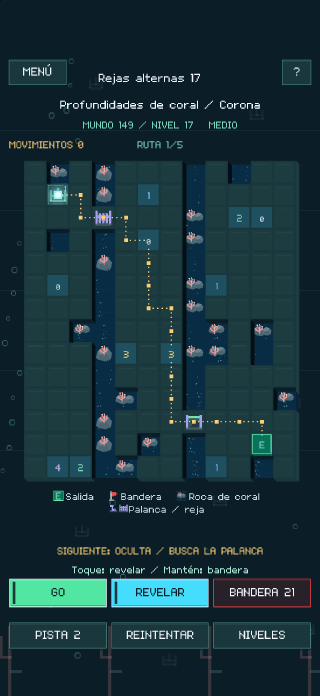
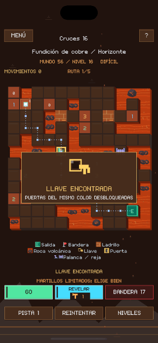
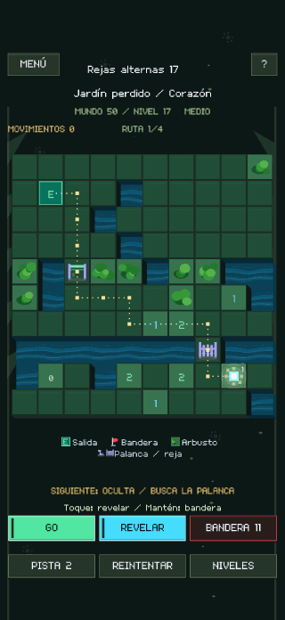
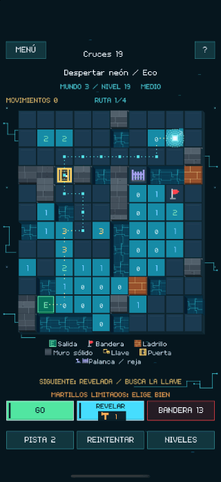
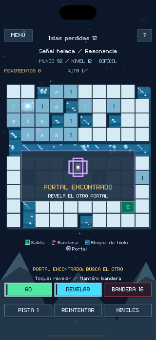
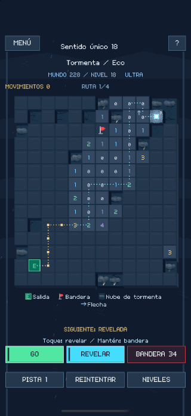
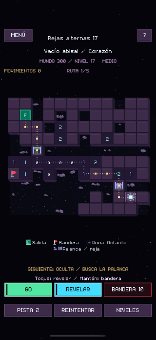

Cada casilla cambia el camino.
Destapa una casilla para leer su pista. Marca las minas con banderas y pulsa GO para mover la luz. GO END lleva la luz hasta la salida cuando has descubierto un camino seguro.
LUMEN MINE
Lee los números, marca las minas y descubre un camino seguro hasta la salida. Tú preparas el camino. La luz lo sigue.
Destapa una casilla para leer su pista. Marca las minas con banderas y pulsa GO para mover la luz. GO END lleva la luz hasta la salida cuando has descubierto un camino seguro.
Rompe ladrillos con un número limitado de martillos, abre puertas, acciona palancas y cruza portales. Si usas una llave en una puerta, la otra puede quedar cerrada.
Puedes llegar a la salida sin despejar todo el tablero. Resuelve una parte mayor del tablero para conseguir un resultado perfecto y ganar estrellas.
Lumen Mine · YouTube
Mira este vídeo corto del juego y descubre sus puzles, mundos y capturas de pantalla.









Explora gratis los tres primeros mundos. Una única compra dentro de la app desbloquea el juego completo, con 300 mundos y 6.000 puzles en total.